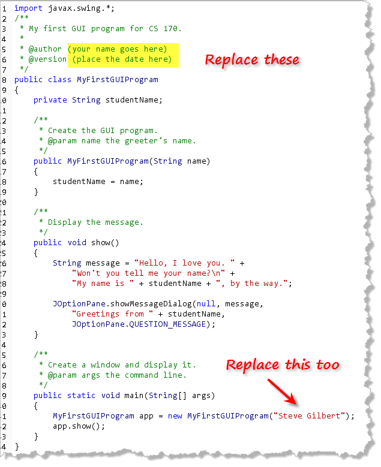
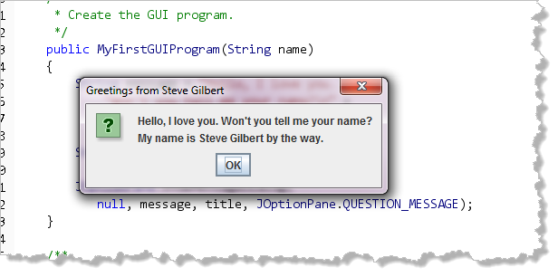
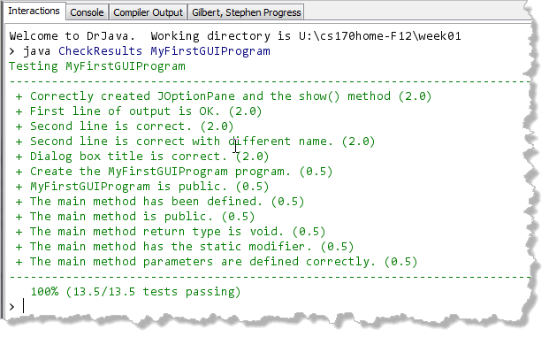

Console programs display their output inside a plain text window. This plain text window can be a "shell", like the Windows command-prompt, or a graphical console window such as that provided by DrJava. Java can also create different kinds of GUI or graphical programs. Some of these programs, called applets, run "inside" a Web page. Others, like DrJava, are called GUI applications and these programs create their own stand-alone windows for input and output.
The simplest kind of GUI application uses predefined dialog windows
from the JOptionPane class. Below, you'll find the
source code for such a simple GUI application. Notice that even though the code is
a little different, the mechanics of creating the program are
exactly the same.
Hands-On: Your first GUI Program
Go ahead and use DrJava to create your first Java GUI program, just
like you did with your first console program. In the editor window,
type the code I've provided here:

As before, replace the placeholders in the heading with your name and date. Also, replace my name with yours in themain()
method.
Running Your App
After you've compiled your code, you can run it just like you
would a console program. Here's the output on my machine.

Testing Your Code
Click the Check button to run the pre-written tests for
your GUI program. As usual, you can test as often as you like,
until you get 100%, or the deadline passes. Notice that when you
check a GUI program, the tester needs to run and then close your
program several different times.
